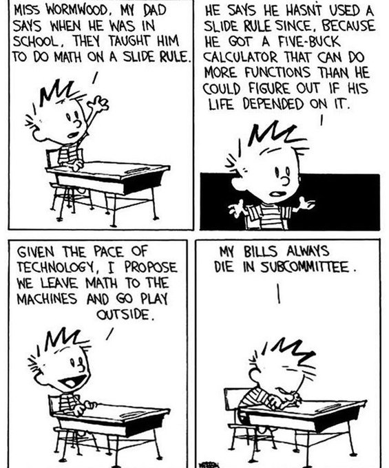
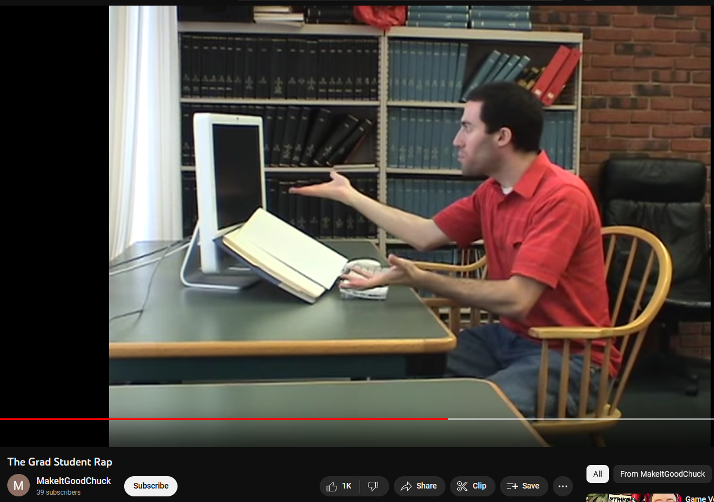
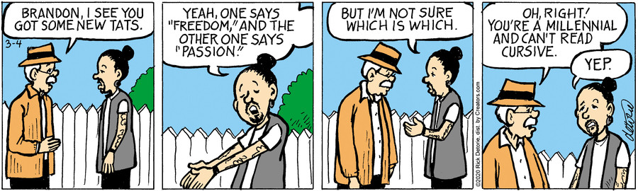
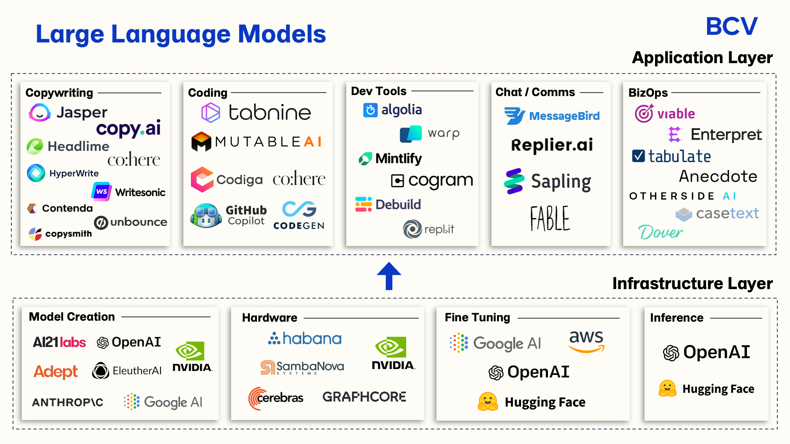
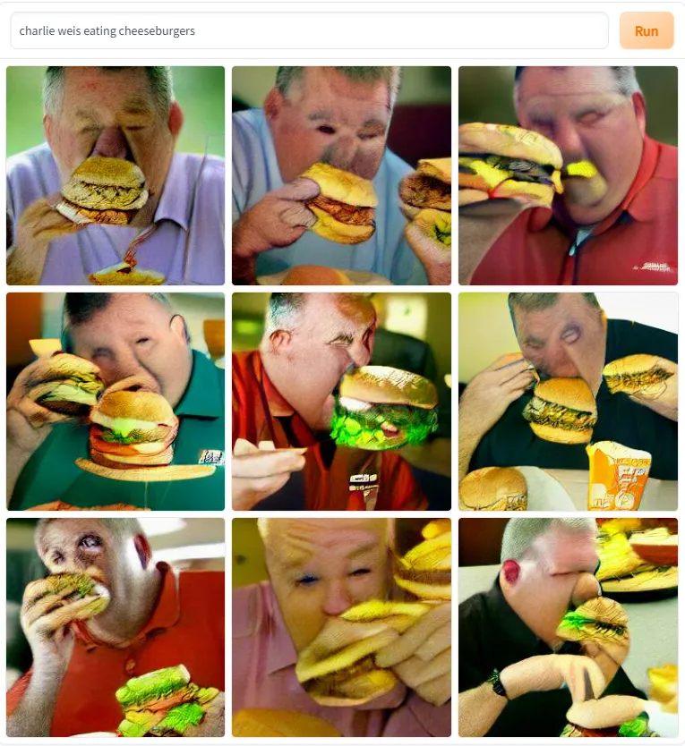

Working Group
Mission
This group of biology instructors will explore the new artificial intelligence technologies and ponder the ramifications on pedagogical environments. We will foster ideas that can benefit instructors and students in learning and production. We will build community guidelines, codes of conduct, and other stores of wisdom to aid our colleagues for the upcoming shifts in education.
Schedule
- 7, one-hour meetings, every other Tuesday
- Sept 5 to Dec 6
- participants share facilitating meetings
- about 25 minutes of homework before meetings
Goals
Stemming from literature, discussions, and in-class activities, we will build a combined survey article of lived experiences using artificial intelligence for classroom lessons and other academic endeavors along with providing shareable infographics to encourage conversations about responsible use of AI tools at other institutions.
Expertise
With the relatively new crop of AI tools released in the past year, we understand that few people feel like experts in this area. This group looks to build together with optimism and curiosity about how our workflows and the structures that we have for our students can be altered in amazing ways.
Deliverables
- examples of lesson plans that use AI tools
- examples of our own use of AI tools
- bi-weekly exploration of AI tools in our group
- Suggestion: start thinking about a project for you own personal self that fits a chatGPT prompt like “Help me make a study plan for …”
Historical Context
Calculator
“You are not always going to have a calculator in your pocket!”

Wikipedia
- “But they all just copy Wikipedia!”
- The Grad Student Rap music video from January 9, 2011

Cursive
“You will only be allowed to write in cursive when you get to college!”  One Big Happy, March 4, 2020
Modern Technologies
Machine Learning
- “… machine learning can be considered a variant to traditional programming, in which it is predisposed in a machine the ability to learn from data (experience) independently, without being explicitly programmed to do it, to then be able to reuse what has been learned about a certain task.”
- quote and image source
Artificial Intelligence
- “It is the science and engineering of making intelligent machines, especially intelligent computer programs. It is related to the similar task of using computers to understand human intelligence, but [artificial intelligence] does not have to confine itself to methods that are biologically observable.” — John McCarthy, Stanford CS professor, 2004 source
- image source
Large Language Models
- “Using self-supervised learning or semi-supervised learning, large language models (LLMs), which are language models made up of neural networks with billions of parameters, are trained on massive amounts of unlabeled text. LLMs are general-purpose models that excel at a variety of tasks as opposed to being trained for a single job.”
- quote and image source

Generative AI
- “Generative AI is a form of artificial intelligence that is designed to generate content, including text, images, video and music. It uses large language models and algorithms to analyze patterns in datasets to mimic the style or structure of specific types of content.”
- quote and image source


Looking Ahead
- suggest list of topics
- volunteer to facilitate/scribe